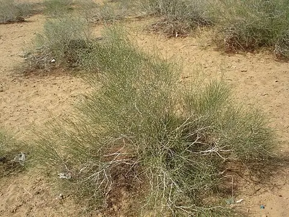

Edible flower or tea · Mar–Apr
Phog
Calligonum polygonoides
Also called Phog, Phogla
Phog is a edible flower or tea you can forage from March to April in Thar and dry northwest. Leafless desert shrub of sand dunes. Its flower buds are a Thar delicacy.

When is phog in season in India?
Phog is usually in season March to April. Timing shifts with weather, latitude and altitude.
Where does phog grow in India?
Phog grows in Gujarat, Rajasthan. Regions: Thar and dry northwest.
How do you recognise phog?
Leafless desert shrub of sand dunes. Its flower buds are a Thar delicacy.
How do you harvest phog?
Pick buds or petals, or gather fresh fallen flowers early in the morning. Leave enough on the plant to set fruit and seed.
How do you eat phog?
Phogla raita with curd, or as sabzi.
How do you store phog?
Sun-dry the buds.
What can you cook with phog?
- Phogla raita: Soaked phog buds stirred into whisked curd with cumin and salt.